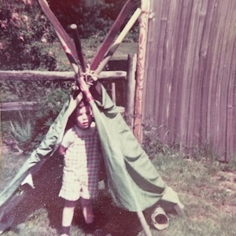
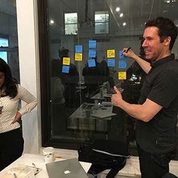

I have a passion for creating user-centered digital experiences that solve complex problems. With over a decade of experience in UX design, research, and strategy, I have worked across various industries including healthcare, finance, and technology. My approach combines empathy, creativity, and data-driven insights to deliver impactful solutions that meet both user needs and business goals.
Outside of work, I enjoy hiking, photography, and exploring new technologies. I believe in continuous learning and am always looking for opportunities to grow both personally and professionally.

Early UX stuff

Doing more UX stuff